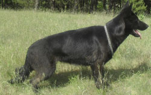

Питомник «ELZAR iz EDEL»
Зарегистрирован в FCI: 12.07.2012 г.
Владелец: Азарко Евгений Михайлович
Республика Беларусь, г.Слоним
Телефон: +37529-7075805(МТС); +37529-3534884(Вел)
Email: Azarko83@mail.ru
Производительницы

Жаклин Хаус Чак
Рождение: 20.08.2008г.
Окрас: чепрачный
Оценка экстерьера: 1 САС; отлично.
Дрессировка: ОКД-1; ЗКС-2.
Тип ВНД: сангвиник.
Описание (дословно с выставки 04.12.11г.)эксперт – Кисляков А.В.
Крупная, мощная, растянутая, параметры головы в норме, достаточно прочный верх, хорошо скошен круп, очень хорошие углы задних конечностей, достаточно свободные движения, объемная грудная клетка. Родословная 166-018605
ЗКС ОКД САС Родословная Оценка
{kind=link}
{kind=link}
{kind=link}
{kind=link}
{kind=link}
{kind=link}
Ивона Хаус Чак
Рождение: 10.06.2010г.
Окрас: черный
Оценка экстерьера: 1 САС; оч.хор.
Тип ВНД: сангвиник-халерик.
Описание(дословно с выставки 04.12.11г.) эксперт – Кисляков А.В.
Крупная, средней крепости, достаточно физически развита, глаза должны быть темнее, круп скошен, грудная клетка должна быть объемней, хорошие углы задних конечностей. Родословная 166-023191
{kind=link}
{kind=link}
{kind=link}